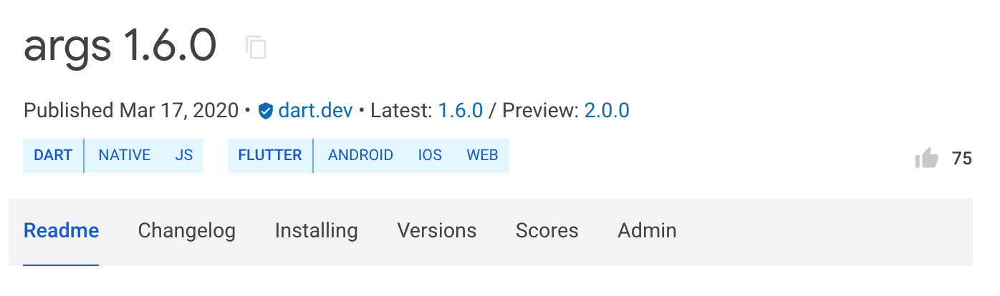

Publishing packages
- Remember: Publishing is forever
- Prepare your package for publication
- Publish your package
- Manage publishing permissions
- Manage your package
The pub package manager isn't just for using other people's packages. It also allows you to share your packages with the world. If you have a useful project and you want others to be able to use it, use the dart pub publish command.
Watch the following video for an overview of building and publishing packages.
How to build a package in Dart
Remember: Publishing is forever
#Keep in mind that a published package lasts forever. As soon as you publish your package, users can depend on it. Once they start depending on it, removing the package would break theirs. To avoid that, the pub.dev policy disallows unpublishing packages except for very few cases.
You can always upload new versions of your package, but old ones remain available for users that can't upgrade yet.
For published packages that have lost relevance or lack maintenance, mark them as discontinued.
Prepare your package for publication
#When publishing a package, follow the conventions found in the pubspec format and package layout structure. To simplify using your package, Dart requires these conventions. These conventions contain some exceptions noted on the linked guides. When invoked, pub points out what changes you can make so your package works better within the Dart ecosystem.
Beyond these conventions, you must follow these requirements:
Include a
LICENSEfile in your package. We recommend the BSD 3-clause license, which the Dart and Flutter teams typically use. However, you can use any license appropriate for your package.Verify that you have the legal right to redistribute anything that you upload as part of your package.
Keep package size to less than 100 MB after gzip compression. If it's too large, consider splitting it into multiple packages, using a
.pubignorefile to remove unnecessary content, or cutting down on the number of included resources or examples.Have your package depend only on hosted dependencies from the default pub package server and SDK dependencies (
sdk: flutter). These restrictions ensure that dependencies of your packages can be found and accessed in the future.Own a Google Account. Pub uses a Google account to manage package upload permissions. Your Google Account can be associated with a Gmail address or any other email address.
Populate your pub.dev web page
#Pub uses the contents of a few files to create a page for your package at pub.dev/packages/<your_package>. The following files affect the contents of your package's web page.
README.md- This file contains the main content featured in your package's web page. The file's contents should be marked up using Markdown. To learn how to write a great README, see Writing package pages.
CHANGELOG.md- If found, this file populates its own tab on your package's web page. Developers can read your changes right from pub.dev. The file's contents should be marked up using Markdown.
pubspec.yaml- This file populates details about your package on the right side of your package's web page. The file's contents should follow YAML conventions. These details include description, homepage, and the like.
Advantages of using a verified publisher
#You can publish packages using either a verified publisher (recommended) or an independent Google Account. Using a verified publisher has the following advantages:
- The consumers of your package know that the publisher domain has been verified.
- You can avoid having pub.dev display your personal email address. Instead, pub.dev displays the publisher domain and contact address.
- The pub.dev site displays a verified publisher badge
 next to your package name on search pages and individual package pages.
next to your package name on search pages and individual package pages.
Create a verified publisher
#To create a verified publisher, follow these steps:
Go to pub.dev.
Log in to pub.dev using a Google Account.
From the user menu in the top-right corner, select Create Publisher.
Enter the domain name that you want to associate with your publisher (for example,
dart.dev).Click Create Publisher.
In the confirmation dialog, select OK.
If prompted, complete the verification flow. This opens the Google Search Console.
- When adding DNS records, a few hours might pass before the Search Console reflects the changes.
- When the verification flow is complete, return to step 4.
Publish your package
#Use the dart pub publish command to publish your package for the first time or to update it to a new version.
What files are published?
#The published package includes all files under the package root directory, with the following exceptions:
- Any hidden files or directories. These have names that begin with dot (
.). - Files and directories listed to be ignored in a
.pubignoreor.gitignorefile
To use different ignore rules for git and dart pub publish, create a .pubignore file to overrule the .gitignore file in a given directory. If a directory contains both a .pubignore file and a .gitignore file, then dart pub publish ignores that directory's .gitignore file. The .pubignore files follow the same format as the .gitignore file.
To avoid publishing unwanted files, follow these practices:
- Delete any files that you don't want to include or add them to a
.pubignoreor.gitignorefile. - When uploading your package, examine the list of files that
dart pub publish --dry-runshows it will publish. Cancel the upload if any undesired files appear in that list.
Test publishing your package
#To test how dart pub publish will work, you can perform a dry run:
$ dart pub publish --dry-runWith this command, dart pub performs the following tasks:
Verifies that your package follows the pubspec format and package layout conventions.
Shows all of the files it intends to publish.
The following example shows test publishing a package named transmogrify:
Publishing transmogrify 1.0.0
.gitignore
CHANGELOG.md
README.md
lib
transmogrify.dart
src
transmogrifier.dart
transmogrification.dart
pubspec.yaml
test
transmogrify_test.dart
Package has 0 warnings.Publish to pub.dev
#To publish your package when it's ready, remove the --dry-run argument:
$ dart pub publishWith this command, dart pub performs the following tasks:
Verifies that your package follows the pubspec format and package layout conventions.
Validates that
git statusis clean. Warns if files that are tracked in git have uncommitted changes.Shows all of the files it intends to publish.
Uploads your package to pub.dev.
After your package succeeds in uploading to pub.dev, any pub user can download it or depend on it in their projects.
For example, if you just published version 1.0.0 of your transmogrify package, then another Dart developer can add it as a dependency in their pubspec.yaml:
dependencies:
transmogrify: ^1.0.0Detect supported platforms
#The pub.dev site detects which platforms a package supports, displaying these platforms on the package page. Users of pub.dev can filter searches by platform.
To change the generated list of supported platforms, specify supported platforms in the pubspec.yaml file.
Automate publishing
#Once you have published the first version of a package, you can configure automated publishing through GitHub Actions or Google Cloud service accounts. To learn more about automated publishing, consult Automated publishing of packages to pub.dev.
Publish prerelease versions
#As you work on a package, consider publishing it as a prerelease. Prereleases can be useful when:
- You're actively developing the next major version of the package.
- You want beta testers for the next release candidate of the package.
- The package depends on an unstable version of the Dart or Flutter SDK.
As described in semantic versioning, to make a prerelease of a version, append a suffix to the version. For example, to make a prerelease of version 2.0.0, you might use the version 2.0.0-dev.1. Later, when you release version 2.0.0, it takes precedence over all 2.0.0-XXX prereleases.
As pub prefers stable releases when available, users of a prerelease package might need to change their dependency constraints. For example, if a user wants to test prereleases of version 2.1.0, then instead of ^2.0.0 or ^2.1.0 they might specify ^2.1.0-dev.1.
When you publish a prerelease to pub.dev, the package page displays links to both the prerelease and the stable release. The prerelease doesn't affect the analysis score, show up in search results, or replace the package README.md and documentation.
Publish preview versions
#Previews can be useful when all of the following are true:
- The next stable version of the package is complete.
- That package version depends on an API or feature in the Dart SDK that hasn't yet been released in a stable version of the Dart SDK.
- You know that the API or feature that the package depends on is API-stable and won't change before it reaches the stable SDK.
As an example, consider a new version of package:args that has a finished version 2.0.0. It depends on a feature in Dart 3.0.0-417.1.beta. However, the stable version of Dart SDK 3.0.0 hasn't been released. The pubspec.yaml file might look like this:
name: args
version: 2.0.0
environment:
sdk: '^3.0.0-417.1.beta'When you publish this package to pub.dev, it's tagged as a preview version. The following screenshot illustrates this. It lists the stable version as 1.6.0 and the preview version as 2.0.0.

When Dart releases the stable version of 3.0.0, pub.dev updates the package listing to display 2.0.0 as the latest (stable) version of the package.
If all of the conditions at the beginning of this section are true, ignore the following warning from dart pub publish:
"Packages with an SDK constraint on a pre-release of the Dart SDK should themselves be published as a pre-release version. If this package needs Dart version 3.0.0-0, consider publishing the package as a pre-release instead."
Manage publishing permissions
#Locate the package publisher
#If a package has a verified publisher, the pub.dev page for that package displays the publisher domain.
For packages published without a publisher, pub.dev doesn't disclose the publisher for privacy reasons. The Publisher field displays "unverified uploader".
Manage package uploaders
#Whoever publishes the first version of a package becomes the first and only person authorized to upload additional versions of that package.
To allow or disallow other people to upload versions, either:
- Manage authorized uploaders on the admin page for the package:
https://pub.dev/packages/<package>/admin. - Transfer the package to a verified publisher; all members of a publisher are authorized to upload.
Transfer a package to a verified publisher
#To transfer a package to a verified publisher, you must be an uploader for the package and an admin for the verified publisher.
To transfer a package to a verified publisher:
Log in to pub.dev with a Google Account that's listed as an uploader of the package.
Go to the package details page (for example,
https://pub.dev/packages/http).Select the Admin tab.
Enter the name of the publisher, and click Transfer to Publisher.
Manage your package
#Retract a package version
#To prevent new package consumers from adopting a published version of your package within a seven-day window, you can retract that package version within seven days of publication. The retracted version can be restored again within seven days of retraction.
Retraction isn't deletion. A retracted package version appears in the version listing of the package on pub.dev in the Retracted versions section. The detailed view of that package version displays a RETRACTED badge.
Before retracting a package, consider publishing a new version instead. Retracting a package can have a negative impact on package users.
If you publish a new version with either a missing dependency constraint or a lax dependency constraint, then retracting the package version might be the only solution. Publishing a newer version of your package won't stop the version solver from picking the old version. That version might be the only version pub can choose. Retracting a package version with incorrect dependency constraints forces users to either upgrade other dependencies or get a dependency conflict.
However, if your package contains a minor bug, you might not need to retract the version. Publish a newer version with the bug fixed and a description of the fixed bug in CHANGELOG.md. This helps users to understand what happened. Publishing a newer version is less disruptive to package users.
How to use a retracted version of a package
#If a package depends on a package version that later is retracted, it can still use that version as long as that version is in the dependent package's pubspec.lock file. To depend on a specific version that's already retracted, the dependent package must pin the version in the dependency_overrides section of the pubspec.yaml file.
How to migrate away from a retracted package version
#When a package depends on a retracted package version, you have choices in how you migrate away from this version depending on other available versions.
Upgrade to a newer version
#In most cases a newer version has been published to replace the retracted version. In this case run dart pub upgrade <package>.
Downgrade to the newest non-retracted version
#If no newer version is available, consider downgrading to the newest non-retracted version. You can do this in one of two ways.
Use pub tool commands:
Run
dart pub downgrade <package>to get the lowest version of the specified package that matches the constraints in thepubspec.yamlfile.Run
dart pub upgrade <package>to get the newest compatible and non-retracted version available.
Edit the
pubspec.lockfile in your preferred IDE:Delete the entire package entry for the package with the retracted version.
Run
dart pub getto get the newest compatible and non-retracted version available.
Though you could delete the pubspec.lock file and run dart pub get, this is not recommended. It might result in version changes for other dependencies.
Upgrade or downgrade to a version outside the specified version constraint
#If there is no alternative version available that satisfies the current version constraint, edit the version constraint in the pubspec.yaml file and run dart pub upgrade.
How to retract or restore a package version
#To retract or restore a package version, first sign in to pub.dev using a Google Account that's either an uploader or a verified publisher admin for the package. Then go to the package's Admin tab, where you can retract or restore recent package versions.
Discontinue a package
#Although packages remain published, you can signal to developers that a package receives no active maintenance. This requires you to mark the package as discontinued.
Once you discontinue a package, the package will:
- Remain published on pub.dev.
- Remain viewable on pub.dev.
- Display a clear DISCONTINUED badge.
- Not appear in pub.dev search results.
To mark a package as discontinued:
Sign in to pub.dev using a Google Account with uploader or verified publisher permissions for the package.
Navigate to the package's Admin tab.
To discontinue a package, select Mark "discontinued".
You can also recommend a replacement package.
In the field under Suggested replacement, type the name of another package.
Click Update "Suggested Replacement".
If you change your mind, you can remove the discontinued mark at any time.
Unless stated otherwise, the documentation on this site reflects Dart 3.6.0. Page last updated on 2024-12-06. View source or report an issue.